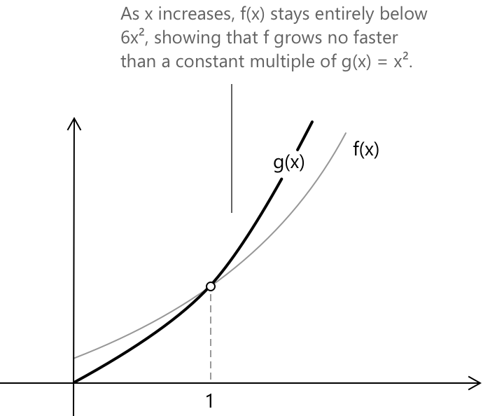

Нотація "велике O"
Що таке нотація «О велике»
Символ \( O(x) \), відомий як «О велике» від \( x \), належить до сімейства символів Ландау. Він представляє концепцію асимптотичних верхніх меж, вказуючи на те, що функція зростає не швидше за іншу функцію, коли аргумент наближається до заданої границі. Формально це означає, що відношення двох функцій залишається обмеженим, коли аргумент наближається до границі.
Нехай \(f(x)\) та \(g(x)\) — дві функції, визначені на множині \(A\), і нехай \(x_0\) є граничною точкою для \(A\). Якщо існують додатні сталі \(M\) та \(\delta\) такі, що для всіх \(x\) в околі \(x_0\) (за винятком самого \(x_0\)) виконується \(|f(x)| \leq M|g(x)|\), то ми кажемо, що \(f(x)\) є \(O(g(x))\) при \(x \to x_0\). Символічно:
\[\exists \, M > 0, \, \delta > 0 : |x – x_0| < \delta \rightarrow |f(x)| \leq M|g(x)| \quad \rightarrow \quad f(x) = O_{x_0}(g(x))\]
Ця нотація вказує на те, що \(f(x)\) зростає асимптотично не швидше за \(g(x)\) поблизу \(x_0\). Щоб проілюструвати це означення, нехай \( f(x) = 3x^2 + 2x + 1 \) та \( g(x) = x^2 \). На графіку відображено \( f(x) \) разом із \( 6x^2 = M \cdot g(x) \), що слугує асимптотичною верхньою межею.

Для всіх \( x \geq 1 \) крива \( f(x) \) залишається повністю нижче \( 6x^2 \). Хоча обидві криві мають однакову швидкість зростання, \( f(x) \) не перевищує свою межу. Цей зв'язок представляє геометричну інтерпретацію \( f(x) = O(x^2) \).
Приклад
Щоб зробити концепцію зрозумілішою, розглянемо простий приклад. Розглянемо функцію \(f(x) = 3x^2 + 2x + 1\) при \(x \to \infty\). Ми хочемо показати, що \(f(x) = O(x^2)\).
Для великих значень \(x\) ми можемо проаналізувати:
\[\frac{3x^2 + 2x + 1}{x^2} = 3 + \frac{2}{x} + \frac{1}{x^2}\]
При \(x \to \infty\) це відношення наближається до 3. Точніше, для \(x \geq 1\):
\[\frac{3x^2 + 2x + 1}{x^2} = 3 + \frac{2}{x} + \frac{1}{x^2} \leq 3 + 2 + 1 = 6\]
Отже, ми можемо обрати \(M = 6\) і зробити висновок:
\[3x^2 + 2x + 1 = O(x^2) \quad \text{при} \quad x \to \infty\]
Дослідимо, чому це так. Якщо ми порівняємо \(f(x) = 3x^2 + 2x + 1\) та \(g(x) = x^2\) при \(x \to \infty\), ми помітимо, що \(f(x)\) зростає щонайбільше так само швидко, як і стала кратна \(x^2\).
Ось кілька прикладів:
- Якщо \(x = 10\), тоді \(f(x) = 300 + 20 + 1 = 321\) і \(6x^2 = 600\).
- Якщо \(x = 100\), тоді \(f(x) = 30000 + 200 + 1 = 30201\) і \(6x^2 = 60000\).
- Якщо \(x = 1000\), тоді \(f(x) = 3000000 + 2000 + 1 = 3002001\) і \(6x^2 = 6000000\).
Як показують ці приклади, \(f(x)\) завжди обмежена зверху значенням \(6x^2\) для \(x \geq 1\). Це ключова ідея нотації «О велике»: вона відображає той факт, що одна функція зростає щонайбільше так само швидко, як інша (з точністю до сталого множника), коли аргумент наближається до певного значення.
Значення \( O(1) \)
Символ \(O(1)\) представляє клас функцій, які залишаються обмеженими, коли \(x\) наближається до певної точки \(x_0\). Іншими словами, функція \(f(x)\) належить до \(O(1)\), якщо вона залишається обмеженою порівняно зі сталою при \(x \to x_0\). Формально ми пишемо \(f(x) = O(1)\) при \(x \to x_0\) тоді і тільки тоді, коли:
\[\exists M > 0, \delta > 0 : |x – x_0| < \delta \Rightarrow |f(x)| \leq M\]
Множину всіх функцій, що належать до \(O(1)\), можна описати наступним чином:
\[O_{x_0}(1) = \left\lbrace f : B(x_0, \delta) \setminus {x_0} \to \mathbb{R} ,\Big|, \exists M > 0 : |f(x)| \leq M \text{ для } x \text{ поблизу } x_0 \right\rbrace \]
На практиці цей вираз використовується для опису концепції \(O(1)\) шляхом уточнення того, що:
- Розглянуті функції повинні бути визначені на околі \(x_0\), за винятком самої точки \(x_0\).
- Функція повинна залишатися обмеженою, коли \(x\) наближається до \(x_0\).
- Нотація \(O(1)\) представляє множину всіх функцій, які є обмеженими порівняно зі сталою, зокрема щодо 1.
- Символ \(B(x_0, \delta)\) позначає відкритий окіл \(x_0\) з радіусом \(\delta\), де визначена функція.
Приклад 1
Розглянемо функцію:
\[f(x) = \frac{\sin(x)}{x} \quad \text{при} \quad x \to 0\]
Використовуючи розклад Тейлора для \(\sin(x)\) поблизу нуля, при \(x \to 0\) маємо:
\[\sin(x) = x - \frac{x^3}{6} + O(x^5) \]
Поділивши обидві частини на \(x\) при \(x \to 0\), отримаємо:
\[\frac{\sin(x)}{x} = 1 - \frac{x^2}{6} + O(x^4) \]
Тепер зауважимо, що член \(\dfrac{x^2}{6}\) та залишок \(O(x^4)\) обидва залишаються обмеженими при \(x \to 0\). Отже, при \(x \to 0\) ми можемо записати:
\[\frac{\sin(x)}{x} = O(1)\]
Цей вираз показує, що функція залишається обмеженою поблизу \(x = 0\), навіть попри те, що функція має у цій точці усувну особливість.
Приклад 2
О-позначення часто виникає в контексті розкладів Тейлора для характеристики члена залишку. Наприклад, розглянемо розклад Тейлора для \( \cos(x) \) біля нуля:
\[ \cos(x) = 1 - \frac{x^2}{2} + \frac{x^4}{24} - \cdots \]
Відсікання ряду після другого члена дає залишок, який обмежений константою, помноженою на \( x^4 \), для \( x \) біля нуля. Тому його можна виразити як:
\[ \cos(x) = 1 - \frac{x^2}{2} + O(x^4) \quad \text{при} \quad x \to 0 \]
Це означає, що існує стала \( M > 0 \), така що:
\[ \left| \cos(x) – 1 + \frac{x^2}{2} \right| \leq M x^4 \]
для всіх \( x \) в околі нуля. Оскільки наступним членом ряду є \( x^4/24 \), звідси випливає, що \( M = 1/24 \) є достатнім для достатньо малих \( x \). Таке застосування О-позначення є поширеним в аналізі: замість того, щоб зберігати весь нескінченний ряд, залишаються лише цікаві члени, а всі доданки вищого порядку об'єднуються в один член залишку \( O(x^n) \).
Властивості
Однією з фундаментальних властивостей О-позначення є те, що за означенням, якщо \(g(x) = O(f(x))\) при \(x \to x_0\), то відношення двох функцій залишається обмеженим. Формально:
\[\limsup_{x \to x_0} \left|\frac{O(f(x))}{f(x)}\right| < \infty\]
Множення функції на ненульову сталу не змінює її асимптотичної поведінки в О-позначенні. Для будь-якої сталої \(c \neq 0\) та функції \(g(x)\), при \(x \to x_0\), маємо:
\[O(c \cdot g(x)) = O(g(x))\] \[c \cdot O(g(x)) = O(g(x))\]
Це показує, що О-позначення поглинає сталі коефіцієнти: масштабування на ненульовий сталий коефіцієнт не впливає на асимптотичну верхню межу біля \(x_0\).
О-члени також поводяться передбачувано при додаванні. Сума двох О-членів однієї і тієї ж функції залишається О-членом цієї функції. Формально при \(x \to x_0\):
\[O(f(x)) + O(f(x)) = O(f(x))\]
Це означає, що додавання двох функцій, кожна з яких асимптотично обмежена \(f(x)\), призводить до суми, яка все ще асимптотично обмежена \(f(x)\) (можливо, з більшою сталою).
При множенні О-члена на функцію результатом є новий О-член, де асимптотична поведінка масштабується відповідно. Зокрема, для функцій \(f(x)\) та \(g(x)\), при (x \to x_0):
\[f(x) , O(g(x)) = O(f(x)g(x))\]
Наприклад, якщо \(g(x) = x\) та \(O(g(x)) = O(x)\), то множення на \(f(x) = x^2\) дає:
\[x^2 \cdot O(x) = O(x^3)\]
Інша важлива властивість О-позначення стосується степенів функцій. Якщо функція \(f(x)\) асимптотично обмежена \(g(x)\) при \(x \to x_0\), то піднесення обох функцій до одного і того ж додатного степеня зберігає відношення О-позначення. Формально, для \(a > 0\), якщо \(f(x) = O(g(x)\) при \(x \to x_0\), то:
\[[f(x)]^a = O([g(x)]^a)\]
Ця властивість показує, що асимптотична верхня межа масштабується узгоджено при додатних степенях: якщо \(f(x)\) обмежена кратною \(g(x)\), то \([f(x)]^a\) також обмежена кратною \([g(x)]^a\) при \(x \to x_0\). Наприклад, якщо \(f(x) = O(x)\) при \(x \to \infty\), то при \(x \to \infty\) маємо:
\[[f(x)]^2 = O(x^2)\]
О-позначення демонструє властивість транзитивності. Зокрема, якщо \( f(x) = O(g(x)) \) та \( g(x) = O(h(x)) \) при \( x \to x_0 \), то:
\[ f(x) = O(h(x)) \quad \text{при} \quad x \to x_0 \]
Доведення є простим. За припущенням, існують додатні сталі \( M_1 \) та \( M_2 \), а також окіл \( x_0 \), такі що виконуються як \( |f(x)| \leq M_1|g(x)| \), так і \( |g(x)| \leq M_2|h(x)| \).
Комбінування цих нерівностей дає \( |f(x)| \leq M_1 M_2 |h(x)| \), отже \( f(x) = O(h(x)) \) зі сталою \( M = M_1 M_2 \). Наприклад, \( x^3 = O(x^4) \) та \( x^4 = O(x^5) \) при \( x \to \infty \), тому за транзитивністю \( x^3 = O(x^5) \) при \( x \to \infty \).
Транзитивність дозволяє створювати ланцюжки асимптотичних обмежень: якщо \( f \) обмежена \( g \), а \( g \) обмежена \( h \), то \( f \) також обмежена \( h \).
Зв'язок з o-позначенням
Важливо зауважити зв'язок між О-позначенням та o-позначенням.
- Якщо \(f(x) = o(g(x))\), то \(f(x) = O(g(x))\): o-позначення передбачає О-позначення.
- Обернене твердження не обов'язково є правильним: \(f(x) = O(g(x))\) не передбачає \(f(x) = o(g(x))\). Наприклад, \(f(x) = x\) та \(g(x) = x\) задовольняють \(f(x) = O(g(x))\), але не \(f(x) = o(g(x))\) при \(x \to \infty\), оскільки \(\lim_{x \to \infty} \frac{x}{x} = 1 \neq 0.\)
Вибрана література
-
MIT. Big O Notation
-
University of Illinois, A. J. Hildebrand. Asymptotic Notations
-
Rice University, J. A. Dobelman. Big O and Little o
-
Simon Fraser University, R. Lockhart. Landau Notation: Big O and Little o